Open Social Science: research tools for transparency and reproducibility.
Julio Iturra-Sanhueza1,2
1Bremen International Graduate School of Social Sciences, University Bremen
April, 2026, Bremen
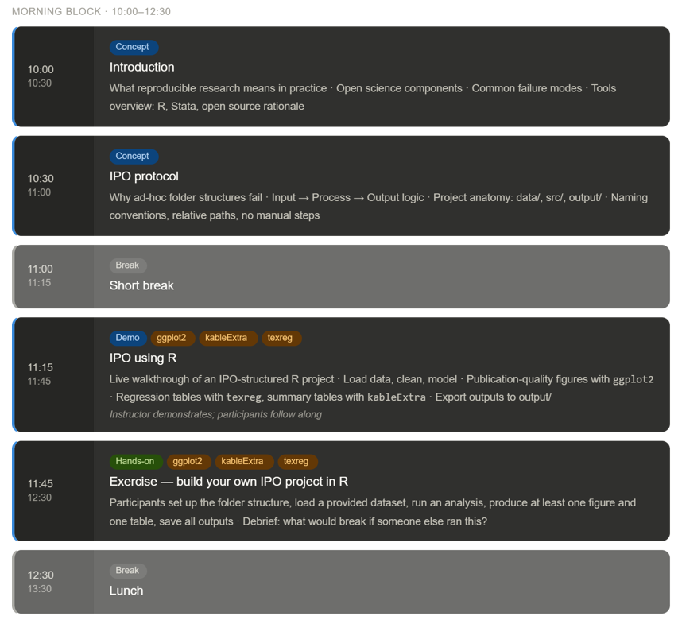
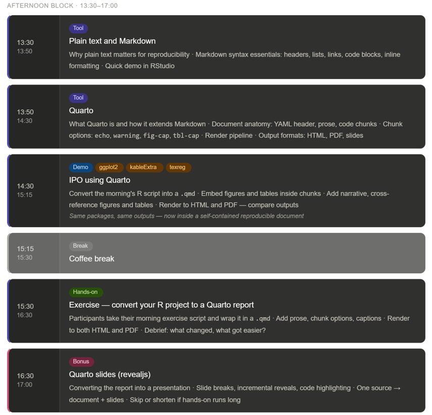
Background and motivation
- Open Social Science Lab (LISA for Laboratorio de Ciencia Social Abierta)
- Founded in 2019 at the Centre for Social Conflict and Cohesion Studies, COES (2013-2025)
- Development of a minimal framework for Open Social Science from and for the Latin American social sciences.
Why an Open (Social) Science?
Growing concerns about openness and transparency have highlighted three problematic practices:
p-hacking
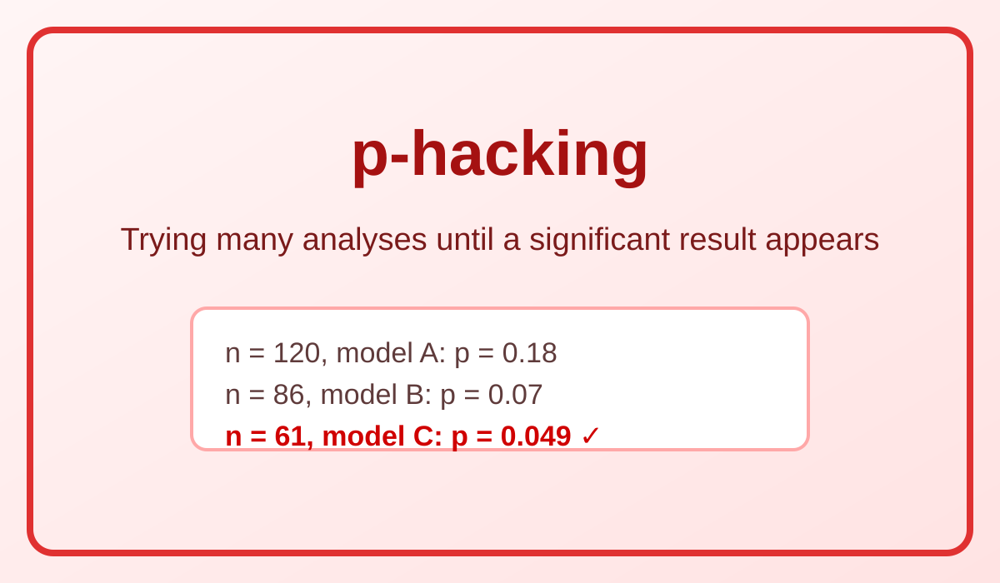
HARKing
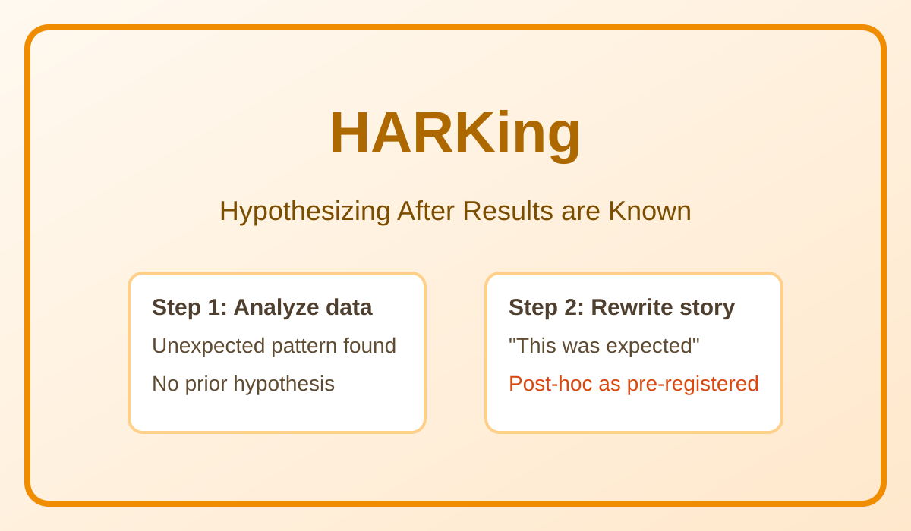
Selective reporting
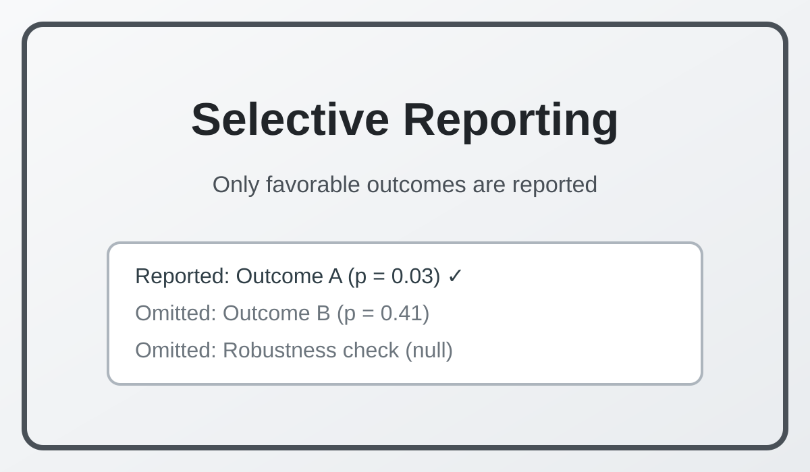
Key Issues - Publication bias (selective positive results) - Decisions (hiden uncertainty) - Poor reproducibility (inaccessible data/code)
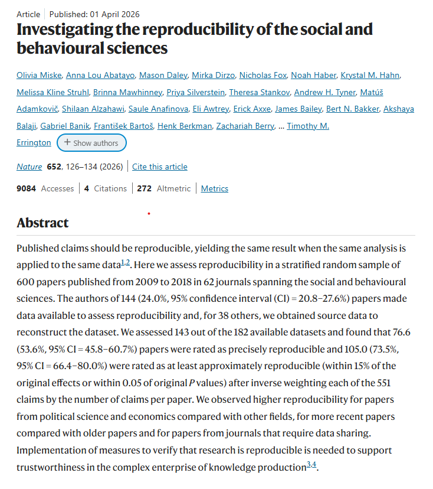
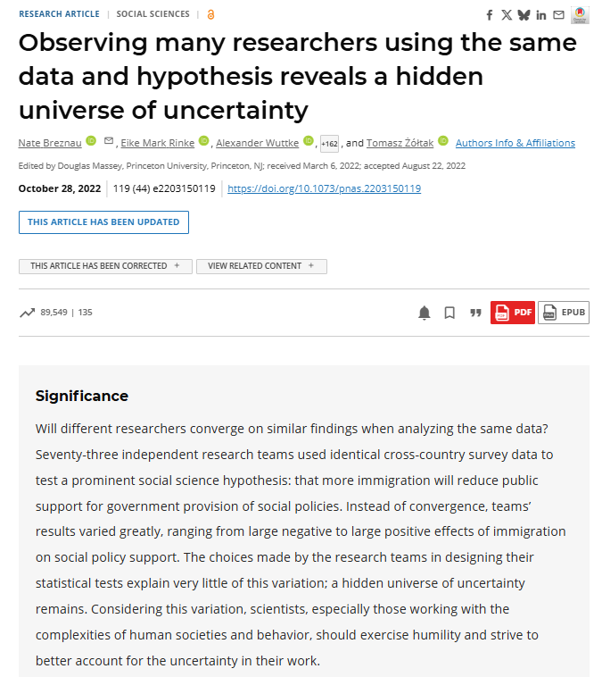
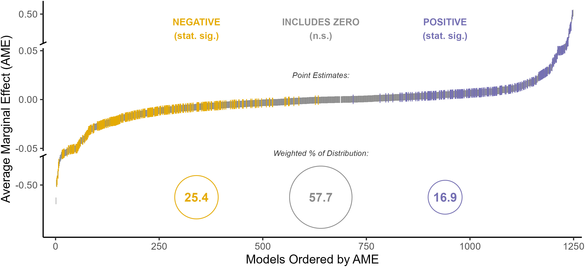
What does an open social science look like?
🔍 Motivation
Principles, procedures and tools to make research more transparent, reproducible, and accessible to specialized and non-specialized audiences.
Transparency
Openness

Reproducibility

Access

The open science workflow 1
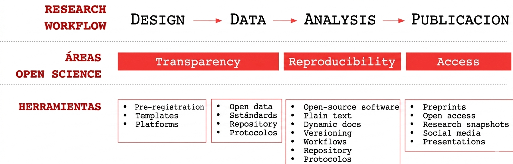
Built on Prior Work
Nota
based on the TIER protocol (Teaching Integrity in Empirical Research). TIER “promotes the integration of principles and practices related to transparency and replicability in the research training of social scientists.” More information: https://www.projecttier.org/.
- Self-contained
- Organized in structured folders (data, code, outputs, etc.)
- Our take: ideally (not necessarily) using open-source software and open formats to maximize accessibility and reproducibility.
- Can be shared and aims to be executed by other researchers
- Always open to improvements and adaptations to specific research contexts and needs.
The IPO protocol 1
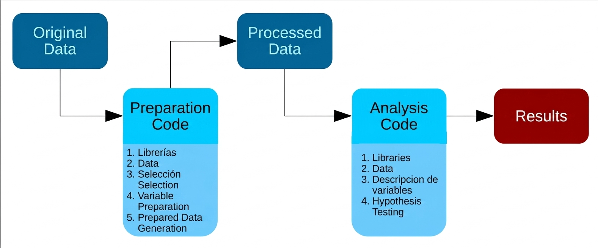
The folder structure
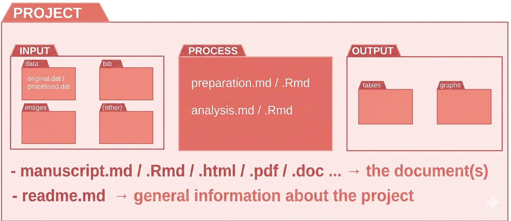
The root/
The root folder contains the main files of the project and it is organized in a hierarchical structure.
README file: description of the project, instructions for using the files, and contact information.
Main document (e.g., “paper.docx”, paper.qmd): main document outlining the research findings and conclusions.
input/: data files needed for the analysis.processing/: scripts and programs used for processing the data.output/: results of the analysis, including tables, figures, and reports.
(1) /input
- Raw data and processed data used for the analysis
- Organized in clear and consistent manner
- Descriptive names indicating content and format
- Examples: “issp_data_2020.dta”, “df_study1.RData”
- Subfolders for different data types (e.g., “original/”, “proc/”)
💡 Note
Be aware that depending on the data sources (e.g. surveys) won’t be able to share the raw data due to ethical and legal issues. In this case, you can share the processed data (e.g., “df_study1.RData”) and provide detailed information about the data processing steps in the “Processing/” folder.
(2) /processing
- Scripts and programs used for data processing and analysis
- Well-documented with comments explaining each step and assumptions
- Examples: “proc_preparation.R”, “proc_analysis.R”
- Ensures project structure is clear and reproducible for other researchers
🔦 Connection to Input/Output
Connected to input as it uses data from the “Input/” folder and generates results for the “Output/” folder.
(3) /output
- Results of the analysis: tables, figures, and reports
- Organized subfolders: “tables/”, “images/”
- Descriptive naming: indicates content and format
- Examples: “table1.csv”, “table2.txt”, “figure1.png”
- Accessible and interpretable for other researchers
💡 Note
Use clear, descriptive filenames and organize outputs by type (tables, figures) for easy navigation. Consider including a README in this folder describing each output file’s purpose and how to interpret it.
Folder Structure
Project/ (Root Folder)
├── input/ # External information and raw materials
│ ├── data/ # Data-specific storage
│ │ ├── original/ # Raw data files & metadata (read-only)
│ │ └── proc/ # Cleaned/Processed data files
│ ├── images/ # Image assets for the document
│ ├── bib/ # Bibliography and citation files (.bib)
│ └── prereg/ # Study pre-registration documents
│
├── processing/ # Code and scripts folder
│ ├── preparation.Rmd # Script for data cleaning/wrangling
│ └── analysis.Rmd # Script for statistical models/analysis
│
├── output/ # Results generated by the code
│ ├── images/ # Figures, plots, and visual results
│ └── tables/ # Formatted data tables and summaries
│
├── README.md # General project description & instructions
└── main_document.qmd # Main research document (source)
├── main_document.pdf # Compiled output document
├── main_document.html # Web-ready output document
└── main_document.docx # Word version for collaborationIPO Protocol in R
Creating an RProject
In RStudio:
- File → New Project
- Choose New Directory
- Select New Project
- Enter project name (e.g.,
bigsss-study) - Choose parent directory
- Click Create Project
Result:
.Rprojfile created in project root- New RStudio session opens with correct working directory
here::here()will work reliably across all subdirectories
Project Structure
project/
├── input/
│ ├── original/
│ │ └── data_original.dta
│ └── data/
│ └── proc/
│ ├── dfstudy1.RData
│ └── table000.html
├── processing/
│ └── prod_processing.R
├── output/
│ ├── images/
│ └── tables/
└── README.md
└── main_document.qmd
└── bigsss-study.RprojPackages I like
- Support / workflow
here(project-safe file paths)pacman(package loading/installation)
- Data manipulation
dplyr(data wrangling)car(datasets and recoding)
- Data reporting
kableExtra(publication-style tables)broom(tidy model outputs)texreg(regression tables)sjPlot(codebooks)vtable(full descriptive tables)ggplot2(figures and visual reporting)
Installing and loading packages with pacman
Step 1: Install pacman if not already available
Installing and loading packages with pacman
Step 2: Add support / workflow packages
Installing and loading packages with pacman
Step 3: Add data manipulation packages
Installing and loading packages with pacman
Step 4: Add all reporting packages — ready to run!
Example: Data Processing Script
Load libraries and use the Prestige dataset from the car package:
Example: Data Processing Script
Load libraries and use the Prestige dataset from the car package:
rm(list = ls())
if (!requireNamespace("pacman", quietly = TRUE)) install.packages("pacman", repos = "https://cloud.r-project.org")
pacman::p_load(here, car, dplyr)
data(Prestige)
data_orig <- Prestige
str(data_orig) # inspect raw data structure
#> 'data.frame': 102 obs. of 6 variables:
#> $ education: num 13.1 12.3 12.8 11.4 14.6 ...
#> $ income : int 12351 25879 9271 8865 8403 11030 8258 14163 11377 11023 ...
#> $ women : num 11.16 4.02 15.7 9.11 11.68 ...
#> $ prestige : num 68.8 69.1 63.4 56.8 73.5 77.6 72.6 78.1 73.1 68.8 ...
#> $ census : int 1113 1130 1171 1175 2111 2113 2133 2141 2143 2153 ...
#> $ type : Factor w/ 3 levels "bc","prof","wc": 2 2 2 2 2 2 2 2 2 2 ...Recode Variables from Prestige
Create categorical, dummy, and continuous variables:
Recode Variables from Prestige
Create categorical, dummy, and continuous variables:
dfstudy1 <- data_orig %>%
mutate(
prestige_cont = prestige,
income_cont = income,
education_cont = education,
women_pct = women,
income_cat = car::recode(income,
"1000:8000 = 'Low'; 8001:12000 = 'Mid'; else = 'High'"),
education_level = car::recode(education,
"lo:10.09 = 'Low'; 10.1:13 = 'Mid'; 13.1:hi = 'High'"),
prestige_tier = car::recode(prestige,
"0:30.5 = 'Low'; 30.6:60 = 'Mid'; 60.1:100 = 'High'"),
blue_collar = car::recode(type, "'bc' = 1; else = 0"),
professional = car::recode(type, "'prof' = 1; else = 0"),
high_women = car::recode(women, "50:100 = 1; else = 0")
) %>%
as.data.frame()Recode Variables from Prestige
Create categorical, dummy, and continuous variables:
dfstudy1 <- data_orig %>%
mutate(
prestige_cont = prestige,
income_cont = income,
education_cont = education,
women_pct = women,
income_cat = car::recode(income,
"1000:8000 = 'Low'; 8001:12000 = 'Mid'; else = 'High'"),
education_level = car::recode(education,
"lo:10.09 = 'Low'; 10.1:13 = 'Mid'; 13.1:hi = 'High'"),
prestige_tier = car::recode(prestige,
"0:30.5 = 'Low'; 30.6:60 = 'Mid'; 60.1:100 = 'High'"),
blue_collar = car::recode(type, "'bc' = 1; else = 0"),
professional = car::recode(type, "'prof' = 1; else = 0"),
high_women = car::recode(women, "50:100 = 1; else = 0")
) %>%
as.data.frame()
# create directories and save
dir.create(here("input/data/proc"), recursive = TRUE, showWarnings = FALSE)
dir.create(here("output/images"), recursive = TRUE, showWarnings = FALSE)
dir.create(here("output/tables"), recursive = TRUE, showWarnings = FALSE)
save(dfstudy1, file = here("input/data/proc/dfstudy1.RData"))
str(dfstudy1)
#> 'data.frame': 102 obs. of 16 variables:
#> $ education : num 13.1 12.3 12.8 11.4 14.6 ...
#> $ income : int 12351 25879 9271 8865 8403 11030 8258 14163 11377 11023 ...
#> $ women : num 11.16 4.02 15.7 9.11 11.68 ...
#> $ prestige : num 68.8 69.1 63.4 56.8 73.5 77.6 72.6 78.1 73.1 68.8 ...
#> $ census : int 1113 1130 1171 1175 2111 2113 2133 2141 2143 2153 ...
#> $ type : Factor w/ 3 levels "bc","prof","wc": 2 2 2 2 2 2 2 2 2 2 ...
#> $ prestige_cont : num 68.8 69.1 63.4 56.8 73.5 77.6 72.6 78.1 73.1 68.8 ...
#> $ income_cont : int 12351 25879 9271 8865 8403 11030 8258 14163 11377 11023 ...
#> $ education_cont : num 13.1 12.3 12.8 11.4 14.6 ...
#> $ women_pct : num 11.16 4.02 15.7 9.11 11.68 ...
#> $ income_cat : chr "High" "High" "Mid" "Mid" ...
#> $ education_level: chr "High" "Mid" "Mid" "Mid" ...
#> $ prestige_tier : chr "High" "High" "High" "Mid" ...
#> $ blue_collar : Factor w/ 2 levels "0","1": 1 1 1 1 1 1 1 1 1 1 ...
#> $ professional : Factor w/ 2 levels "0","1": 2 2 2 2 2 2 2 2 2 2 ...
#> $ high_women : num 0 0 0 0 0 0 0 0 0 0 ...Codebook (HTML) with sjPlot
Codebook (HTML) with sjPlot
| ID | Name | Label | Values | Value Labels |
|---|---|---|---|---|
| 1 | education | range: 6.4-16.0 | ||
| 2 | income | range: 611-25879 | ||
| 3 | women | range: 0.0-97.5 | ||
| 4 | prestige | range: 14.8-87.2 | ||
| 5 | census | range: 1113-9517 | ||
| 6 | type | bc prof wc |
||
| 7 | prestige_cont | range: 14.8-87.2 | ||
| 8 | income_cont | range: 611-25879 | ||
| 9 | education_cont | range: 6.4-16.0 | ||
| 10 | women_pct | range: 0.0-97.5 | ||
| 11 | income_cat | <output omitted> | ||
| 12 | education_level | <output omitted> | ||
| 13 | prestige_tier | <output omitted> | ||
| 14 | blue_collar | 0 1 |
||
| 15 | professional | 0 1 |
||
| 16 | high_women | range: 0-1 | ||
Full Descriptive Table with st() (Code)
pacman::p_load(vtable, kableExtra)
sumtable_plain <- vtable::st(
dfstudy1,
summ = c("notNA(x)", "mean(x)", "median(x)", "sd(x)", "min(x)", "max(x)"),
summ.names = c("N", "Mean", "Median", "SD", "Min", "Max"),
factor.numeric = FALSE,
digits = 2,
out = "return",
title = "Table 001. Full descriptive table of processed variables"
)
capture.output(print(sumtable_plain), file = here("output/tables/table001.txt"))Full Descriptive Table with st() (Code)
pacman::p_load(vtable, kableExtra)
sumtable_plain <- vtable::st(
dfstudy1,
summ = c("notNA(x)", "mean(x)", "median(x)", "sd(x)", "min(x)", "max(x)"),
summ.names = c("N", "Mean", "Median", "SD", "Min", "Max"),
factor.numeric = FALSE,
digits = 2,
out = "return",
title = "Table 001. Full descriptive table of processed variables"
)
capture.output(print(sumtable_plain), file = here("output/tables/table001.txt"))
tab001 <- vtable::st(
dfstudy1,
labels = TRUE,
out = "kable",
summ = c("notNA(x)", "mean(x)", "median(x)", "sd(x)", "min(x)", "max(x)"),
summ.names = c("N", "Mean (%)", "Median", "SD", "Min", "Max"),
factor.numeric = FALSE,
digits = 2,
title = "Table 001. Full descriptive table of processed variables"
) %>%
kable_classic(html_font = "sans", full_width = FALSE) %>%
footnote(general = "Numeric variables report mean, median, SD, min, and max. Categorical variables report counts and percentages.")
kableExtra::save_kable(tab001, here("output/tables/table001.html"))Full Descriptive Table with st() (Output: plain text)
#> Variable N Mean Median SD Min Max
#> 1 education 102 11 11 2.7 6.4 16
#> 2 income 102 6798 5930 4246 611 25879
#> 3 women 102 29 14 32 0 98
#> 4 prestige 102 47 44 17 15 87
#> 5 census 102 5402 5135 2645 1113 9517
#> 6 type 98
#> 7 ... bc 44 45%
#> 8 ... prof 31 32%
#> 9 ... wc 23 23%
#> 10 prestige_cont 102 47 44 17 15 87
#> 11 income_cont 102 6798 5930 4246 611 25879
#> 12 education_cont 102 11 11 2.7 6.4 16
#> 13 women_pct 102 29 14 32 0 98
#> 14 income_cat 102
#> 15 ... High 11 11%
#> 16 ... Low 70 69%
#> 17 ... Mid 21 21%
#> 18 education_level 102
#> 19 ... High 23 23%
#> 20 ... Low 48 47%
#> 21 ... Mid 31 30%
#> 22 prestige_tier 102
#> 23 ... High 24 24%
#> 24 ... Low 20 20%
#> 25 ... Mid 58 57%
#> 26 blue_collar 102
#> 27 ... 0 58 57%
#> 28 ... 1 44 43%
#> 29 professional 102
#> 30 ... 0 71 70%
#> 31 ... 1 31 30%
#> 32 high_women 102 0.26 0 0.44 0 1Full Descriptive Table with st() (Output: HTML)
| Variable | N | Mean (%) | Median | SD | Min | Max |
|---|---|---|---|---|---|---|
| education | 102 | 11 | 11 | 2.7 | 6.4 | 16 |
| income | 102 | 6798 | 5930 | 4246 | 611 | 25879 |
| women | 102 | 29 | 14 | 32 | 0 | 98 |
| prestige | 102 | 47 | 44 | 17 | 15 | 87 |
| census | 102 | 5402 | 5135 | 2645 | 1113 | 9517 |
| type | 98 | |||||
| ... bc | 44 | 45% | ||||
| ... prof | 31 | 32% | ||||
| ... wc | 23 | 23% | ||||
| prestige_cont | 102 | 47 | 44 | 17 | 15 | 87 |
| income_cont | 102 | 6798 | 5930 | 4246 | 611 | 25879 |
| education_cont | 102 | 11 | 11 | 2.7 | 6.4 | 16 |
| women_pct | 102 | 29 | 14 | 32 | 0 | 98 |
| income_cat | 102 | |||||
| ... High | 11 | 11% | ||||
| ... Low | 70 | 69% | ||||
| ... Mid | 21 | 21% | ||||
| education_level | 102 | |||||
| ... High | 23 | 23% | ||||
| ... Low | 48 | 47% | ||||
| ... Mid | 31 | 30% | ||||
| prestige_tier | 102 | |||||
| ... High | 24 | 24% | ||||
| ... Low | 20 | 20% | ||||
| ... Mid | 58 | 57% | ||||
| blue_collar | 102 | |||||
| ... 0 | 58 | 57% | ||||
| ... 1 | 44 | 43% | ||||
| professional | 102 | |||||
| ... 0 | 71 | 70% | ||||
| ... 1 | 31 | 30% | ||||
| high_women | 102 | 0.26 | 0 | 0.44 | 0 | 1 |
| Note: | ||||||
| Numeric variables report mean, median, SD, min, and max. Categorical variables report counts and percentages. |
Univariate Visualizations (Code)
library(ggplot2)
load(here("input/data/proc/dfstudy1.RData"))
p_hist <- ggplot(dfstudy1, aes(x = prestige_cont)) +
geom_histogram(bins = 15, fill = "steelblue", alpha = 0.7) +
labs(title = "Figure 001. Distribution of Prestige Score", x = "Prestige", y = "Frequency") +
theme_minimal()
ggsave(here("output/images/figure001.png"), p_hist, width = 8, height = 5, dpi = 600)Univariate Visualizations (Code)
library(ggplot2)
load(here("input/data/proc/dfstudy1.RData"))
p_hist <- ggplot(dfstudy1, aes(x = prestige_cont)) +
geom_histogram(bins = 15, fill = "steelblue", alpha = 0.7) +
labs(title = "Figure 001. Distribution of Prestige Score", x = "Prestige", y = "Frequency") +
theme_minimal()
ggsave(here("output/images/figure001.png"), p_hist, width = 8, height = 5, dpi = 600)
p_bar <- ggplot(dfstudy1, aes(x = income_cat, fill = income_cat)) +
geom_bar(show.legend = FALSE) +
labs(title = "Figure 002. Distribution of Income Categories", x = "Income Category", y = "Count") +
theme_minimal()
ggsave(here("output/images/figure002.png"), p_bar, width = 8, height = 5, dpi = 600)Univariate Visualizations (Output)
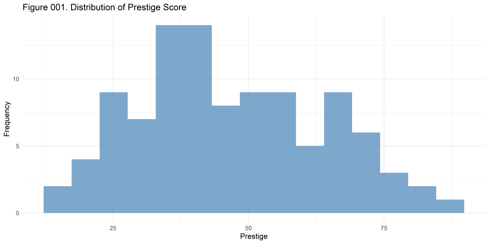
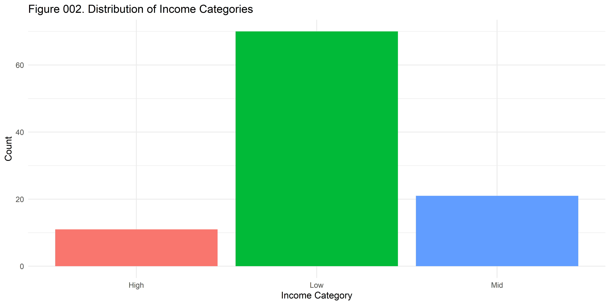
Bivariate Visualizations (Code)
p_box <- ggplot(dfstudy1, aes(x = income_cat, y = prestige_cont, fill = income_cat)) +
geom_boxplot(alpha = 0.7, show.legend = FALSE) +
geom_jitter(width = 0.2, alpha = 0.3) +
labs(title = "Figure 003. Prestige Score by Income Category", x = "Income Category", y = "Prestige Score") +
theme_minimal()
ggsave(here("output/images/figure003.png"), p_box, width = 8, height = 5, dpi = 600)Bivariate Visualizations (Code)
p_box <- ggplot(dfstudy1, aes(x = income_cat, y = prestige_cont, fill = income_cat)) +
geom_boxplot(alpha = 0.7, show.legend = FALSE) +
geom_jitter(width = 0.2, alpha = 0.3) +
labs(title = "Figure 003. Prestige Score by Income Category", x = "Income Category", y = "Prestige Score") +
theme_minimal()
ggsave(here("output/images/figure003.png"), p_box, width = 8, height = 5, dpi = 600)
p_scatter <- ggplot(dfstudy1, aes(x = education_cont, y = prestige_cont)) +
geom_point(alpha = 0.6, size = 3, color = "steelblue") +
geom_smooth(method = "lm", se = TRUE, color = "red") +
labs(title = "Figure 004. Prestige vs Education", x = "Years of Education", y = "Prestige Score") +
theme_minimal()
ggsave(here("output/images/figure004.png"), p_scatter, width = 8, height = 5, dpi = 600)Bivariate Visualizations (Output)
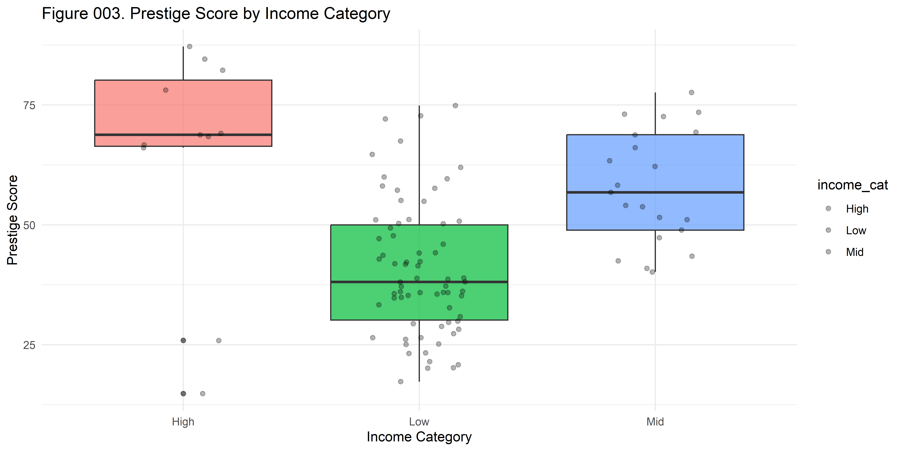
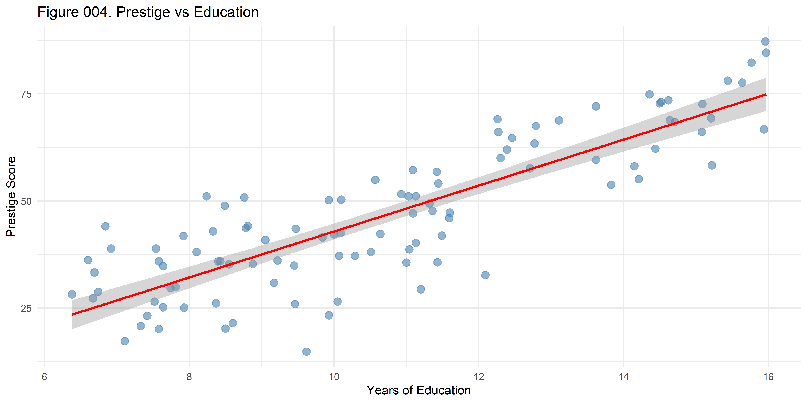
Regression Analysis (Code)
Model prestige as a function of income, education, women %, and blue collar status:
pacman::p_load(broom, texreg)
df_reg <- dfstudy1 %>%
mutate(
income_cat = factor(income_cat, levels = c("Low", "Mid", "High")),
education_level = factor(education_level, levels = c("Low", "Mid", "High")),
high_women = factor(high_women, levels = c(0, 1), labels = c("No", "Yes")),
blue_collar = factor(blue_collar, levels = c(0, 1), labels = c("No", "Yes"))
)Regression Analysis (Code)
Model prestige as a function of income, education, women %, and blue collar status:
pacman::p_load(broom, texreg)
df_reg <- dfstudy1 %>%
mutate(
income_cat = factor(income_cat, levels = c("Low", "Mid", "High")),
education_level = factor(education_level, levels = c("Low", "Mid", "High")),
high_women = factor(high_women, levels = c(0, 1), labels = c("No", "Yes")),
blue_collar = factor(blue_collar, levels = c(0, 1), labels = c("No", "Yes"))
)
model_1 <- lm(prestige_cont ~ income_cont + education_cont, data = df_reg)
model_2 <- lm(prestige_cont ~ income_cont + education_cont + women_pct + blue_collar, data = df_reg)
model_3 <- lm(prestige_cont ~ income_cat + education_level, data = df_reg)
model_4 <- lm(prestige_cont ~ income_cat + education_level + high_women + blue_collar, data = df_reg)
model <- model_4
model_summary <- summary(model)Regression Analysis (Code)
Model prestige as a function of income, education, women %, and blue collar status:
pacman::p_load(broom, texreg)
df_reg <- dfstudy1 %>%
mutate(
income_cat = factor(income_cat, levels = c("Low", "Mid", "High")),
education_level = factor(education_level, levels = c("Low", "Mid", "High")),
high_women = factor(high_women, levels = c(0, 1), labels = c("No", "Yes")),
blue_collar = factor(blue_collar, levels = c(0, 1), labels = c("No", "Yes"))
)
model_1 <- lm(prestige_cont ~ income_cont + education_cont, data = df_reg)
model_2 <- lm(prestige_cont ~ income_cont + education_cont + women_pct + blue_collar, data = df_reg)
model_3 <- lm(prestige_cont ~ income_cat + education_level, data = df_reg)
model_4 <- lm(prestige_cont ~ income_cat + education_level + high_women + blue_collar, data = df_reg)
model <- model_4
model_summary <- summary(model)
# Compare model fit statistics across all 4 models
compare_models <- bind_rows(
glance(model_1) %>% mutate(model = "Continuous M1"),
glance(model_2) %>% mutate(model = "Continuous M2"),
glance(model_3) %>% mutate(model = "Categorical M3"),
glance(model_4) %>% mutate(model = "Categorical M4")
) %>%
select(model, nobs, r.squared, adj.r.squared, sigma, AIC, BIC)Regression Analysis (Output)
model_summary # Summary of the final model
#>
#> Call:
#> lm(formula = prestige_cont ~ income_cat + education_level + high_women +
#> blue_collar, data = df_reg)
#>
#> Residuals:
#> Min 1Q Median 3Q Max
#> -26.106 -6.792 1.035 7.058 21.434
#>
#> Coefficients:
#> Estimate Std. Error t value Pr(>|t|)
#> (Intercept) 33.4685 3.1653 10.573 < 0.0000000000000002 ***
#> income_catMid 3.8130 2.7248 1.399 0.1650
#> income_catHigh 7.4377 3.5861 2.074 0.0408 *
#> education_levelMid 16.7187 3.0412 5.497 0.0000003234639894 ***
#> education_levelHigh 33.2451 3.6431 9.125 0.0000000000000122 ***
#> high_womenYes -4.1212 2.3704 -1.739 0.0853 .
#> blue_collarYes 0.6746 3.1156 0.217 0.8291
#> ---
#> Signif. codes: 0 '***' 0.001 '**' 0.01 '*' 0.05 '.' 0.1 ' ' 1
#>
#> Residual standard error: 9.41 on 95 degrees of freedom
#> Multiple R-squared: 0.7186, Adjusted R-squared: 0.7009
#> F-statistic: 40.44 on 6 and 95 DF, p-value: < 0.00000000000000022
compare_models # Comparison of model fit statistics across all 4 models
#> # A tibble: 4 × 7
#> model nobs r.squared adj.r.squared sigma AIC BIC
#> <chr> <int> <dbl> <dbl> <dbl> <dbl> <dbl>
#> 1 Continuous M1 102 0.798 0.794 7.81 714. 724.
#> 2 Continuous M2 102 0.800 0.791 7.86 717. 733.
#> 3 Categorical M3 102 0.708 0.696 9.48 755. 771.
#> 4 Categorical M4 102 0.719 0.701 9.41 756. 777.texreg for regression tables
Regression Table with screenreg (Code)
pacman::p_load(texreg)
coef_map <- list(
"(Intercept)" = "Intercept",
"income_cont" = "Income (continuous)",
"income_catMid" = "Income: Mid (ref. Low)",
"income_catHigh" = "Income: High (ref. Low)",
"education_levelMid" = "Education: Mid (ref. Low)",
"education_levelHigh" = "Education: High (ref. Low)",
"high_womenYes" = "High women share: Yes (ref. No)",
"blue_collarYes" = "Blue collar: Yes (ref. No)"
)Regression Table with screenreg (Code)
pacman::p_load(texreg)
coef_map <- list(
"(Intercept)" = "Intercept",
"income_cont" = "Income (continuous)",
"income_catMid" = "Income: Mid (ref. Low)",
"income_catHigh" = "Income: High (ref. Low)",
"education_levelMid" = "Education: Mid (ref. Low)",
"education_levelHigh" = "Education: High (ref. Low)",
"high_womenYes" = "High women share: Yes (ref. No)",
"blue_collarYes" = "Blue collar: Yes (ref. No)"
)
screenreg(list(model_1, model_2, model_3, model_4),
file = here("output/tables/table002.txt"),
caption = "Table 002. Comparison of continuous and categorical model specifications (4 models)",
custom.coef.map = coef_map,
custom.header = list("Continuous" = 1:2, "Categorical" = 3:4),
custom.note = "%stars. Data source: `Prestige` dataset from the `car` package.")Regression Table with screenreg (Output)
#>
#> ===============================================================================
#> Continuous Categorical
#> ---------------------- ----------------------
#> Model 1 Model 2 Model 3 Model 4
#> -------------------------------------------------------------------------------
#> Intercept -6.85 * -11.05 32.95 *** 33.47 ***
#> (3.22) (6.19) (1.41) (3.17)
#> Income (continuous) 0.00 *** 0.00 ***
#> (0.00) (0.00)
#> Income: Mid (ref. Low) 5.44 * 3.81
#> (2.59) (2.72)
#> Income: High (ref. Low) 8.79 * 7.44 *
#> (3.40) (3.59)
#> Education: Mid (ref. Low) 15.33 *** 16.72 ***
#> (2.20) (3.04)
#> Education: High (ref. Low) 31.75 *** 33.25 ***
#> (2.79) (3.64)
#> High women share: Yes (ref. No) -4.12
#> (2.37)
#> Blue collar: Yes (ref. No) 2.11 0.67
#> (2.61) (3.12)
#> -------------------------------------------------------------------------------
#> R^2 0.80 0.80 0.71 0.72
#> Adj. R^2 0.79 0.79 0.70 0.70
#> Num. obs. 102 102 102 102
#> ===============================================================================
#> *** p < 0.001; ** p < 0.01; * p < 0.05. Data source: `Prestige` dataset from the `car` package.Regression Table with htmlreg (Code)
Regression Table with htmlreg (Code)
pacman::p_load(texreg)
htmlreg(list(model_1, model_2, model_3, model_4),
file = here("output/tables/table002.html"),
caption = "Table 002. Comparison of continuous and categorical model specifications (4 models)",
caption.above = TRUE,
custom.coef.map = coef_map,
custom.header = list("Continuous" = 1:2,
"Categorical" = 3:4),
custom.note = "%stars. Data source: `Prestige` dataset from the `car` package.")Regression Table with htmlreg (Output)
| Continuous | Categorical | |||
|---|---|---|---|---|
| Model 1 | Model 2 | Model 3 | Model 4 | |
| Intercept | -6.85* | -11.05 | 32.95*** | 33.47*** |
| (3.22) | (6.19) | (1.41) | (3.17) | |
| Income (continuous) | 0.00*** | 0.00*** | ||
| (0.00) | (0.00) | |||
| Income: Mid (ref. Low) | 5.44* | 3.81 | ||
| (2.59) | (2.72) | |||
| Income: High (ref. Low) | 8.79* | 7.44* | ||
| (3.40) | (3.59) | |||
| Education: Mid (ref. Low) | 15.33*** | 16.72*** | ||
| (2.20) | (3.04) | |||
| Education: High (ref. Low) | 31.75*** | 33.25*** | ||
| (2.79) | (3.64) | |||
| High women share: Yes (ref. No) | -4.12 | |||
| (2.37) | ||||
| Blue collar: Yes (ref. No) | 2.11 | 0.67 | ||
| (2.61) | (3.12) | |||
| R2 | 0.80 | 0.80 | 0.71 | 0.72 |
| Adj. R2 | 0.79 | 0.79 | 0.70 | 0.70 |
| Num. obs. | 102 | 102 | 102 | 102 |
| ***p < 0.001; **p < 0.01; *p < 0.05. Data source: `Prestige` dataset from the `car` package. | ||||
kableExtra for tables
kableExtra table by occupation (Code)
kableExtra table by occupation (Code)
pacman::p_load(kableExtra)
tab_occ <- dfstudy1 %>%
group_by(type) %>%
summarise(
mean_income = mean(income_cont, na.rm = TRUE),
mean_education = mean(education_cont, na.rm = TRUE),
.groups = "drop"
) %>%
mutate(type = dplyr::case_when(
type == "bc" ~ "Blue collar",
type == "prof" ~ "Professional",
type == "wc" ~ "white collar",
is.na(type) ~ "Missing",
TRUE ~ "Other"
)) %>%
arrange(match(type, c("Blue collar", "Professional",
"white collar", "Missing", "Other"))) %>%
mutate(occupation_group = if_else(type == "Blue collar", "Manual", "Non-manual")) %>%
mutate(across(c(mean_income, mean_education), ~ round(.x, 2)))kableExtra table by occupation (Output: raw summary)
kableExtra styled tables (Code)
tab_occ_html <- tab_occ %>%
select(type, mean_income, mean_education) %>%
kbl(
col.names = c("Occupation type", "Average income", "Average education"),
caption = "Table 003. Average income and education by occupation type (striped)",
align = c("l", "r", "r")
) %>%
kable_styling(full_width = FALSE, font_size = 16, bootstrap_options = c("striped", "condensed")) %>%
column_spec(1:3, extra_css = "font-family: sans-serif;") %>%
add_header_above(c(" " = 1, "Averages by occupation type" = 2)) %>%
group_rows("Manual occupation", 1, 1) %>%
group_rows("Non-manual occupations", 2, 3) %>%
footnote(general = "Means are computed from the Prestige data (car package).",
number = "Income is measured in dollars; education in years.")
save_kable(tab_occ_html, file = here("output/tables/table003.html"))kableExtra styled tables (Code)
tab_occ_html <- tab_occ %>%
select(type, mean_income, mean_education) %>%
kbl(
col.names = c("Occupation type", "Average income", "Average education"),
caption = "Table 003. Average income and education by occupation type (striped)",
align = c("l", "r", "r")
) %>%
kable_styling(full_width = FALSE, font_size = 16, bootstrap_options = c("striped", "condensed")) %>%
column_spec(1:3, extra_css = "font-family: sans-serif;") %>%
add_header_above(c(" " = 1, "Averages by occupation type" = 2)) %>%
group_rows("Manual occupation", 1, 1) %>%
group_rows("Non-manual occupations", 2, 3) %>%
footnote(general = "Means are computed from the Prestige data (car package).",
number = "Income is measured in dollars; education in years.")
save_kable(tab_occ_html, file = here("output/tables/table003.html"))
tab_occ_classic <- tab_occ %>%
select(type, mean_income, mean_education) %>%
kbl(
col.names = c("Occupation type", "Average income", "Average education"),
caption = "Table 004. Average income and education by occupation type (kable_classic)",
align = c("l", "r", "r")
) %>%
kable_classic(full_width = FALSE, html_font = "sans") %>%
kable_styling(full_width = FALSE, font_size = 16) %>%
add_header_above(c(" " = 1, "Averages by occupation type" = 2)) %>%
group_rows("Manual occupation", 1, 1) %>%
group_rows("Non-manual occupations", 2, 3) %>%
footnote(general = "Classic style with grouped rows.",
number = "Categories: Blue collar, Professional, white collar.")
save_kable(tab_occ_classic, file = here("output/tables/table004.html"))kableExtra table by occupation (Output: Striped)
Averages by occupation type
|
||
|---|---|---|
| Occupation type | Average income | Average education |
| Manual occupation | ||
| Blue collar | 5374.14 | 8.36 |
| Non-manual occupations | ||
| Professional | 10559.45 | 14.08 |
| white collar | 5052.30 | 11.02 |
| Missing | 3344.50 | 9.34 |
| Note: | ||
| Means are computed from the Prestige data (car package). | ||
| 1 Income is measured in dollars; education in years. | ||
kableExtra table by occupation (Output: kable_classic)
Averages by occupation type
|
||
|---|---|---|
| Occupation type | Average income | Average education |
| Manual occupation | ||
| Blue collar | 5374.14 | 8.36 |
| Non-manual occupations | ||
| Professional | 10559.45 | 14.08 |
| white collar | 5052.30 | 11.02 |
| Missing | 3344.50 | 9.34 |
| Note: | ||
| Classic style with grouped rows. | ||
| 1 Categories: Blue collar, Professional, white collar. | ||
Let put all together
Markdown Basics
Why Markdown in Academic Work?
- Plain text is durable, transparent, and version-control friendly.
- Quarto uses Pandoc Markdown, which supports rich academic features.
- One source can render to slides, HTML, PDF, and Word.
- Focus on ideas first, formatting second.
Core Principle
Markdown should stay readable even before rendering.
“A Markdown-formatted document should be publishable as-is, as plain text…”
For academic writing, this means your manuscript remains legible during drafting, review, and collaboration.
Minimal Manuscript Skeleton
Title of the Study
Introduction
Theory and Hypotheses
Data and Methods
Results
Discussion
References
Use headings to communicate argument structure.
Text Formatting for Scholarly Prose
italics for emphasis or terms
bold for limited emphasis
bold italics sparingly
H2O for subscript
x2 for superscript
inline code for variables/functions
Keep emphasis minimal and intentional.
Lists for Research Logic
Research workflow:
- Define research question
- Prepare data
- Estimate models
- Report findings
- Main finding
- Robustness check
Leave a blank line before lists so they render correctly in Quarto.
Links and Figures in Papers
Use informative captions and meaningful alt text when possible.
Footnotes for Clarifications
This claim uses an alternative coding rule.1
Inline note example.2
Footnote IDs must be unique in the full document.
Tables in Pipe Syntax
| Variable | Mean | SD | N |
|---|---|---|---|
| Prestige | 46.8 | 14.2 | 102 |
| Income | 6798 | 4245 | 102 |
Alignment markers (:---, ---:, :---:) improve readability.
Equations for Formal Statements
Inline math: \(E(Y|X)=\beta_0+\beta_1X\)
Display math:
\[ Y_i = \beta_0 + \beta_1 X_i + \varepsilon_i \]
Use inline math for brief notation and display math for core models.
Code Blocks for Reproducibility
::: {.cell}
```{.r .cell-code}
model <- lm(prestige ~ income + education, data = dfstudy1)
summary(model)
#>
#> Call:
#> lm(formula = prestige ~ income + education, data = dfstudy1)
#>
#> Residuals:
#> Min 1Q Median 3Q Max
#> -19.4040 -5.3308 0.0154 4.9803 17.6889
#>
#> Coefficients:
#> Estimate Std. Error t value Pr(>|t|)
#> (Intercept) -6.8477787 3.2189771 -2.127 0.0359 *
#> income 0.0013612 0.0002242 6.071 0.0000000236 ***
#> education 4.1374444 0.3489120 11.858 < 0.0000000000000002 ***
#> ---
#> Signif. codes: 0 '***' 0.001 '**' 0.01 '*' 0.05 '.' 0.1 ' ' 1
#>
#> Residual standard error: 7.81 on 99 degrees of freedom
#> Multiple R-squared: 0.798, Adjusted R-squared: 0.7939
#> F-statistic: 195.6 on 2 and 99 DF, p-value: < 0.00000000000000022
```
:::Show code when teaching methods; hide code when presenting only final results.
Raw Content and Page Breaks
These are useful when preparing PDF/Word manuscripts with strict layout requirements.
## Common Pitfalls in Academic Drafts
- Skipping blank lines before lists or blocks.
- Overusing bold, colors, or decorative formatting.
- Inconsistent heading levels.
- Non-unique footnote identifiers.
- Large uncaptioned tables/figures.
## Practical Checklist
Before submitting a draft:
1. Confirm heading hierarchy reflects argument flow.
2. Confirm all tables and figures are labeled and interpretable.
3. Confirm equations render correctly.
4. Confirm links, footnotes, and citations are valid.
5. Render to PDF/HTML and review formatting differences.
Source guide: <https://quarto.org/docs/authoring/markdown-basics.html>
---
bibliography: "bib/phd-tesis.bib"
---
## What is Quarto?
{width="100%" fig-align="center"}
## How it works
- **`.qmd`** — source file combining narrative text (Markdown) and code chunks
- **Knitr** — executes R code chunks and embeds results (tables, figures, text) into the document
- **Markdown** — lightweight plain-text syntax; human-readable and version-control friendly
- **Pandoc** — universal converter that transforms the Markdown into any target format
**Output formats**
- 📄 PDF — manuscripts, reports, theses
- 🌐 HTML — websites, interactive documents
- 📊 Slides — Reveal.js presentations
- 📝 Word / EPUB — for editors and publishers
# Quarto for Reproducible Research
## What is the YAML?
**YAML** stands for *"YAML Ain't Markup Language"* — a human-readable data serialization format used for configuration files.
The **YAML header** is the configuration block at the top of every `.qmd` file.
It controls *what* Quarto produces and *how* it looks — before any content is written.
```yaml
---
title: "My Document"
format: html
---- Delimited by
---at the start and end - Written in YAML syntax:
key: valuepairs - Parsed by Pandoc before rendering
- Every Quarto document must have one
YAML Basics
Minimal HTML document:
title— document title shown in the outputauthor— author name(s)date: today— inserts current date automaticallyformat: html— target output format (html,pdf,docx,revealjs, …)
YAML Options: TOC and More
Extend the format block with nested options:
toc— adds a table of contentstoc-depth— how many heading levels to includenumber-sections— auto-numbers headingstheme— HTML visual theme (cosmo, flatly, litera, …)code-fold— hides code behind a toggleself-contained— bundles everything into one.htmlfileexecute: echo/warning— global chunk options
The Anatomy of a Code Chunk
Slide 1: Pure Code (no output shown)
Use echo: true to display code, eval: false to skip execution — useful for teaching syntax without running it.
```{r}
#| label: prep-data
#| echo: true
#| eval: false
#| warning: false
#| message: false
pacman::p_load(here, car, dplyr)
data(Prestige)
dfstudy1 <- Prestige %>%
mutate(
prestige_cont = prestige,
income_cont = income,
blue_collar = car::recode(type, "'bc' = 1; else = 0")
)
save(dfstudy1, file = here("input/data/proc/dfstudy1.RData"))
```Key options:
label— unique chunk identifier (used in cross-references and error messages)echo: true— show the code in the outputeval: false— do not run the codewarning/message: false— suppress console noise
Slide 2: Code + Output
Set eval: true to run the code and display results immediately below.
Key options:
eval: true— execute the chunk and embed outputresults: 'markup'(default) — prints console output as-isresults: 'hide'— runs code but suppresses printed outputinclude: false— runs code silently, hides both code and output
Slide 3: Code + Figure Options
Control figure size, resolution, alignment, and caption directly in the chunk.
```{r}
#| label: fig-scatter
#| echo: true
#| eval: true
#| fig-width: 7
#| fig-height: 4
#| fig-align: center
#| fig-cap: "Figure 1. Prestige vs. Education"
#| out-width: "85%"
#| dpi: 300
library(ggplot2)
ggplot(dfstudy1, aes(x = education, y = prestige_cont)) +
geom_point(alpha = 0.6, size = 3, color = "steelblue") +
geom_smooth(method = "lm", se = TRUE, color = "red") +
labs(x = "Years of Education", y = "Prestige Score") +
theme_minimal()
```Key options:
fig-width/fig-height— dimensions in inchesfig-align—"center","left", or"right"fig-cap— caption text (also used for cross-referencing with@fig-scatter)out-width— scales the image in the output (e.g."85%")dpi— resolution (300 for print quality)
Slide 4: Code for HTML Regression Tables (texreg)
Use results: 'asis' so the raw HTML from htmlreg() is passed through directly.
```{r}
#| label: tbl-regression
#| echo: true
#| eval: true
#| results: 'asis'
#| warning: false
pacman::p_load(texreg)
coef_map <- list(
"(Intercept)" = "Intercept",
"income_cont" = "Income (continuous)",
"education" = "Education (years)",
"blue_collarYes" = "Blue collar (ref. No)"
)
htmlreg(
list(model_1, model_2),
custom.coef.map = coef_map,
custom.model.names = c("Model 1", "Model 2"),
caption = "Table 1. OLS models predicting occupational prestige",
caption.above = TRUE
)
```Key options:
results: 'asis'— required forhtmlreg()/kable()— passes raw HTML without escapingecho: true— show the table-building codeeval: true— render the table in output- Without
results: 'asis'the HTML tags appear as plain text
Cross-referencing Figures and Tables
Label chunks with fig- or tbl- prefix, then cite them with @.
In the chunk header:
In prose:
Rules:
- Figure labels must start with
fig- - Table labels must start with
tbl- - Quarto auto-numbers and hyperlinks all references
- Works across HTML, PDF, and Word
Output in HTML:
As shown in Figure 1, prestige increases with education.
Descriptive statistics are reported in Table 1.
Tip: use #| fig-cap and #| tbl-cap — not the chunk label — for the displayed caption text.
Inline Code
Embed live R results directly inside prose — values update automatically on every render.
Source (.qmd):
Rendered output:
The sample contains 102 occupations.
The mean prestige score is 46.8 (SD = 17.2).
The model explains 79.8% of the variance in prestige.
Why it matters:
- Numbers never go out of sync with your data
- No copy-paste errors when revising
- Works with any R expression:
round(),format(),scales::percent(), etc.